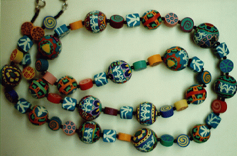
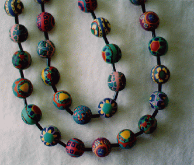
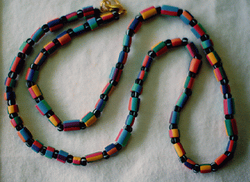
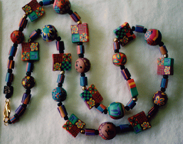
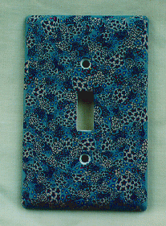
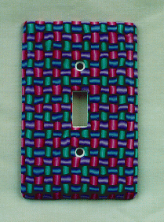

A necklace I made on commission. It was given as a present
to a teacher at the
elementary school I went to. The triple
figures holding hands are the logo of the school. 8/95.

Necklace, 1/97.

Necklace, 1/97.

A necklace I made for a family friend who works in a
Jewish preschool.
I included some teddy bear beads and
the Jewish "Chai" (life) symbol. 1/97.
 
Two switchplates. 8/97.
Last modified: Sun Sep 7 20:23:12 EDT 1997